名前（読みがな）→ ひとこと → 3D → 構造式 → 官能基 → 関連。専門データは「くわしいデータ」に折りたたむ。例: 乳酸
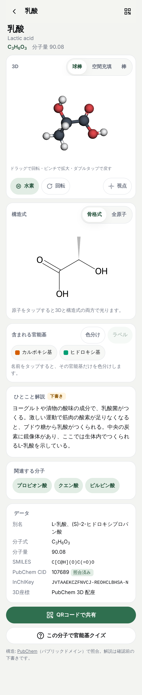
英語名・SMILES・InChIKey などが常に出ている。解説は 3D・構造式・官能基の下。
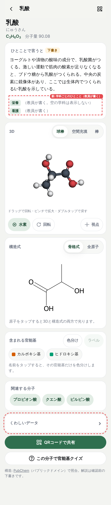
名前の下に読みがな。ひとことを一番上に。その中に学科ごとの一言の欄（中身は教員が書く。空なら出さない）。構造式は立体の印（くさび）なし。データは折りたたみ（開くと 英語名・別名・分子式・分子量・PubChem CID）。
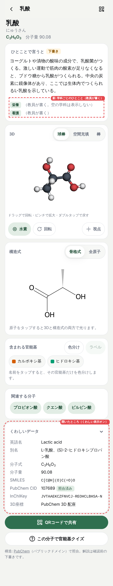
構造式に立体の印（くさび）が出る。データに SMILES・InChIKey・3D座標が加わる。
赤い点線＝変わるところ（実際の画面には出ません）
「選んでから変える」方式（#/build/draw）を外し、なぞって描く画面を正式にする。上部の元に戻す矢印は残す。
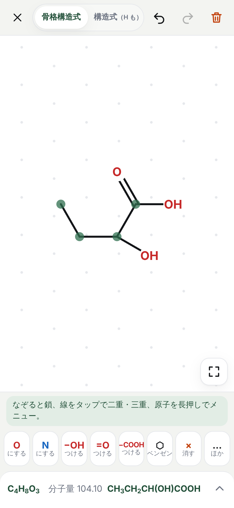
棚は O・N・−OH・=O・−COOH・ベンゼン・消す・ほか の8つ。
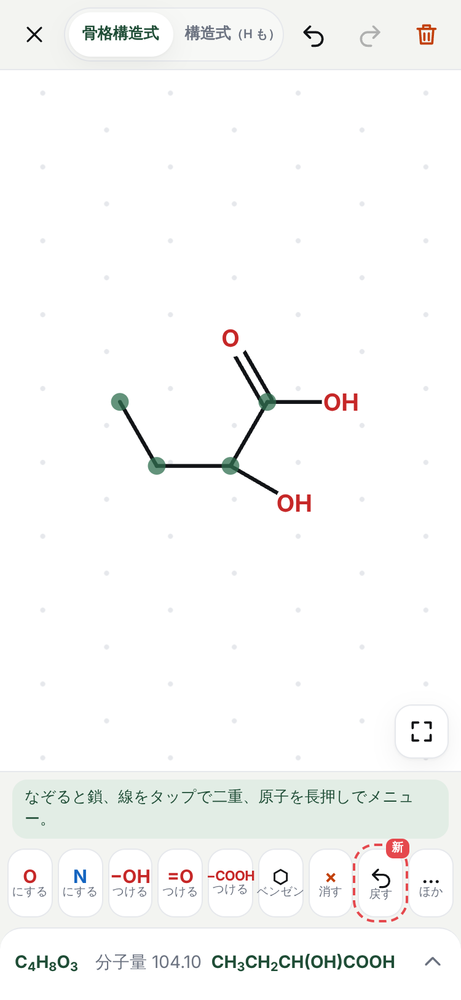
「消す」の隣に「戻す」を追加して9つ。くわしい表示オフでは、線のタップは 単→二重→単（三重は出さない）。
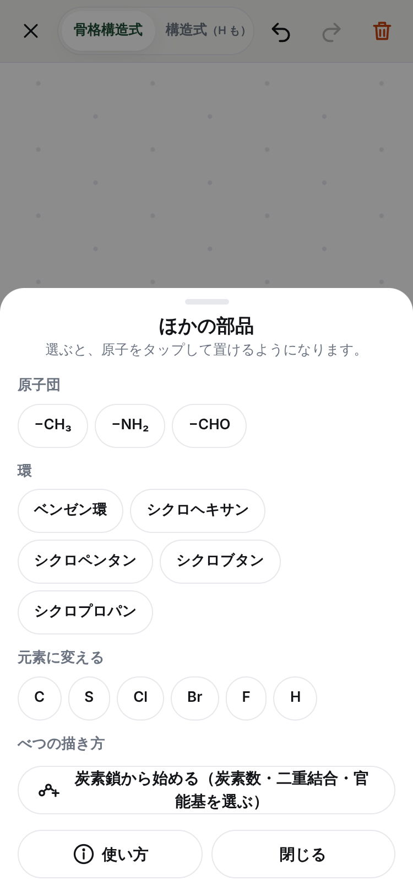
「前の描き方に戻る」を削除。べつの描き方は「炭素鎖から始める」だけ。
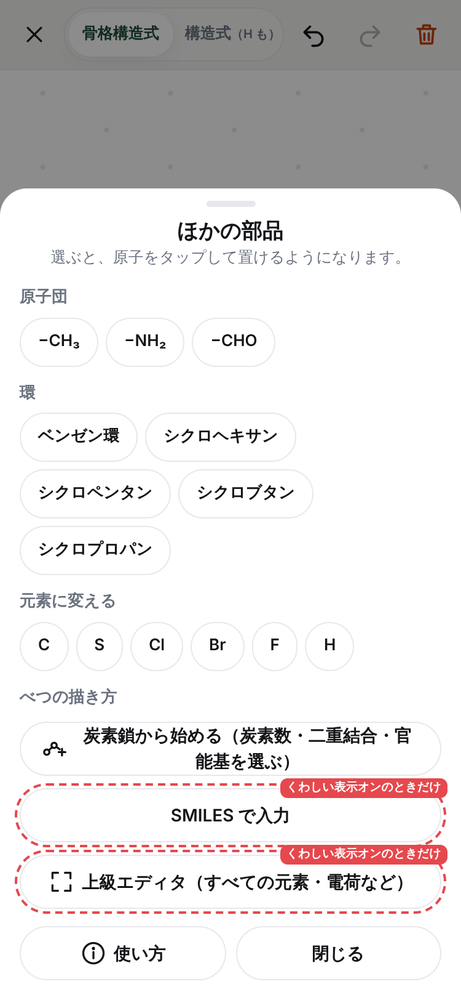
「SMILES で入力」「上級エディタ」はオンのときだけ出す。
赤い点線＝変わるところ（実際の画面には出ません）
書きかえ練習の「描く」も同じ なぞって描く 画面に。「その他」に「くわしい表示」スイッチ（初期はオフ）。
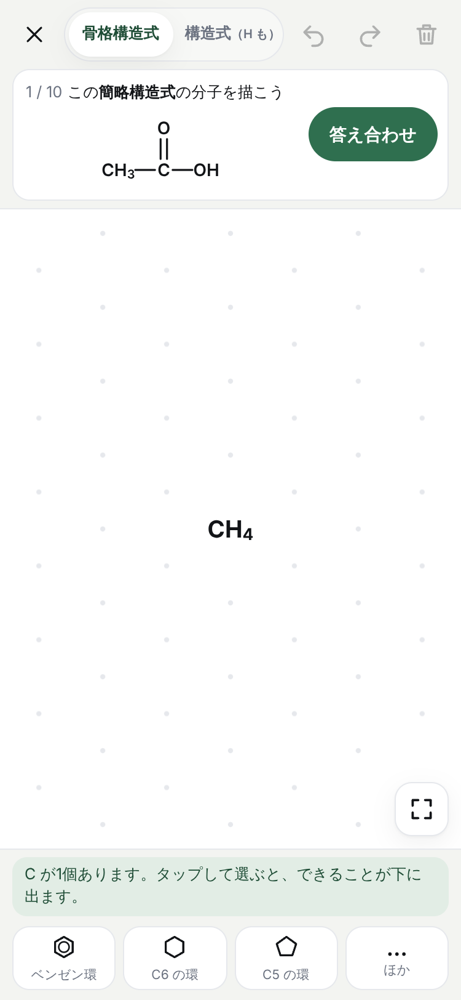
古い「選んでから変える」方式（C を選んで下のボタンで変える）。
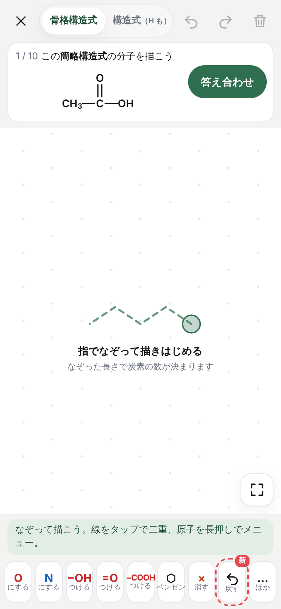
問題と「答え合わせ」はそのまま。描く部分を なぞって描く と同じ棚・操作にする。
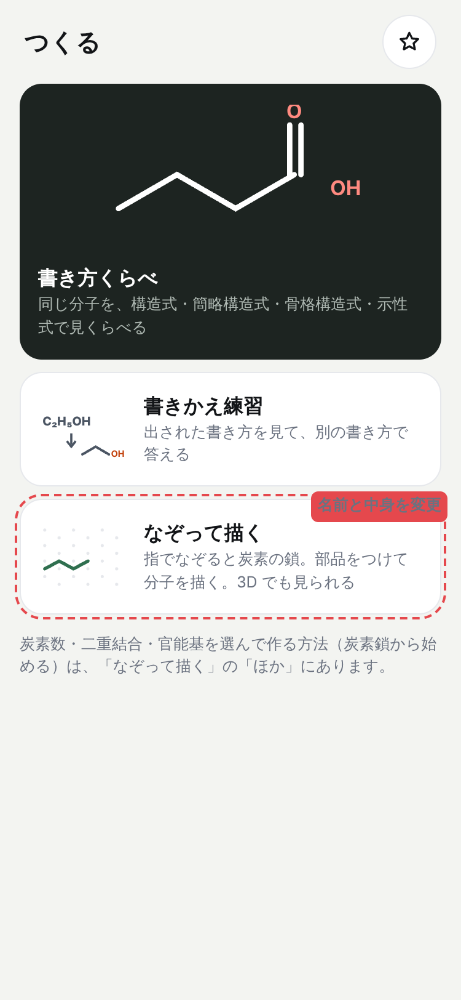
「かんたん作図」を「なぞって描く」に改名し、なぞって描く画面を開く。
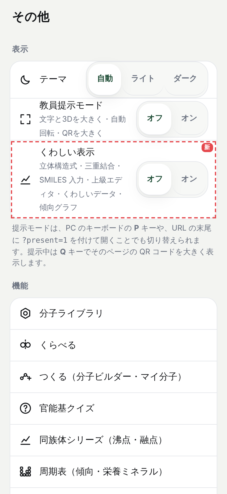
表示の欄に「くわしい表示 オフ／オン」を追加。端末ごとに覚える。
赤い点線＝変わるところ（実際の画面には出ません）